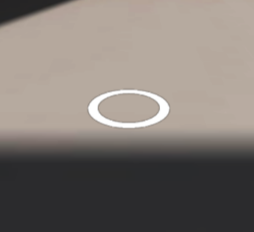

입체도형의 전개도 펼치기/접기 애니메이션 관찰
아래 링크로 접속하여 카메라가 켜지면 아래 이미지를 비춰보세요. 이미지를 비춰보면 원기둥과 함께 전개도를 펼치고 접을 수 있는 버튼이 나타납니다. 본 애플리케이션은 학생들이 직접 전개도를 펼치고 다시 접는 과정을 반복하고 관찰하면서 입체도형을 탐구할 수 있는 환경을 제공합니다.
스마트폰으로 즐길 수 있는 증강현실 콘텐츠로 WebAR 제작을 위해 html과 JavaScript를 사용했으며, Blender를 활용해 3d 모델을 제작하였습니다.

아래 링크로 접속하여 카메라가 켜지면 아래 이미지를 비춰보세요. 이미지를 비춰보면 원기둥과 함께 전개도를 펼치고 접을 수 있는 버튼이 나타납니다. 본 애플리케이션은 학생들이 직접 전개도를 펼치고 다시 접는 과정을 반복하고 관찰하면서 입체도형을 탐구할 수 있는 환경을 제공합니다.
아래 링크로 접속하여 카메라로 바닥을 비춰보세요. 바닥에 아래 이미지와 같이 하얀 고리가 나타나면 화면을 터치해보세요.
프랑스 파리의 대표적인 관광명소인 에펠탑과 인근 지역의 3차원 지도가 나타납니다.
본 애플리케이션은 학생들이 직접 카메라로 지도 곳곳을 비춰보면서 탐구할 수 있는 환경을 제공합니다.
*iOS 기기 사용자의 경우, 이 앱은 WebXR Viewer에서만 작동합니다.
